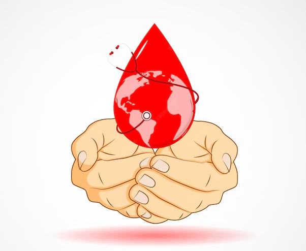

Blood Donation
A blood donation occurs when a person voluntarily has blood drawn and used for transfusions and/or made into biopharmaceutical medications by a process called fractionation (separation of whole blood components). Donation may be of whole blood, or of specific components directly (apheresis). Blood banks often participate in the collection process as well as the procedures that follow it.
Know more
